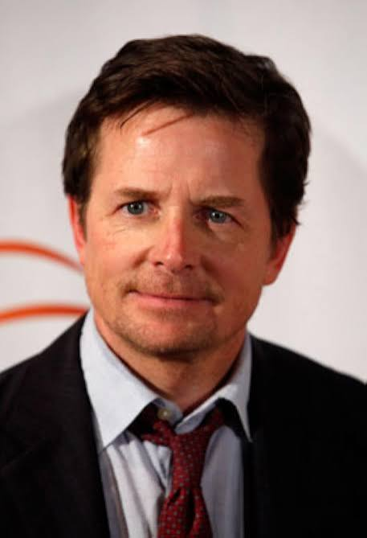

Voices of Resilience preserves the firsthand accounts of public figures who have faced life-altering illness. Cancer, heart disease, neurological conditions, mental health crises and more. Their stories exist so no one faces theirs alone.
Illness does not pause for prominence. When a public figure receives a diagnosis that turns their world over, they face the same fear, silence, and uncertainty as anyone else. But they also carry a platform most people do not.
When they choose to speak, something shifts. Thousands of people sitting with the same diagnosis, quietly and alone, suddenly have a reference point. A name they recognise. A story that mirrors theirs.
Voices of Resilience exists to collect, preserve, and share those accounts with care. We do not sensationalise. We do not speculate. We document what people have chosen to say publicly and make it freely accessible to anyone who needs it.
All testimonies are drawn from public statements, verified interviews, and direct contributions. Voices of Resilience is a non-governmental initiative and does not provide medical advice.
"I had a normal mammogram in October 2023. Two months later I was diagnosed with Luminal B breast cancer in both breasts. The Tyrer-Cuzick risk assessment tool is what caught it."
Olivia Munn went public with her diagnosis in March 2024 after undergoing a double mastectomy. She had received a standard mammogram that showed nothing. An additional risk assessment calculation flagged her elevated score and prompted further testing. She has since advocated loudly for the Tyrer-Cuzick tool to become standard practice, crediting it with saving her life.

Diagnosed at 29, kept private for seven years, then went public in 1998. His foundation has since raised over one billion dollars for Parkinson's research. Presidential Medal of Freedom recipient, January 2025.
Diagnosed with lupus at 25 and later with bipolar disorder. Spoke about hospitalisation, kidney transplant surgery, and managing both conditions while remaining one of the most followed people in the world.
Diagnosed in February 2024. The Palace chose public disclosure to reduce stigma. He resumed public duties in April 2024 while continuing treatment.
Diagnosed with Luminal B breast cancer in both breasts in late 2023 after a routine mammogram showed nothing. Underwent a double mastectomy and went public in March 2024, crediting the Tyrer-Cuzick tool with saving her life.
Diagnosed at 29, kept private for seven years, then went public in 1998. His foundation has since raised over one billion dollars for Parkinson's research. Presidential Medal of Freedom recipient, January 2025.
Diagnosed with lupus at 25 and later bipolar disorder. Has spoken extensively about hospitalisation, a kidney transplant, and managing chronic illness while remaining one of the most followed public figures in the world.
Diagnosed in February 2024. The Palace chose public disclosure to reduce stigma around cancer. He resumed public duties in April 2024 while continuing treatment.
On April 11, 2023, Foxx experienced a sudden medical emergency and was unresponsive for 20 days. He described it as the closest to death he had ever been. He recovered fully and returned to filming within the year.
Diagnosed with Stage 1 Triple Positive Breast Cancer in December 2023, she went public in October 2024. Treatment required chemotherapy and radiation. She spoke plainly about the misconception that early stage means easy.
Diagnosed in 2003 and disclosed publicly in 2020 alongside serious spinal surgery. Has been candid about the physical limitations Parkinson's has imposed and about refusing to let it define the last chapter of his career.
Voices of Resilience began in 2018 with a simple observation: public figures were sharing some of the most honest, detailed, and humanising accounts of serious illness that existed anywhere, and most of them were vanishing into news cycles within days.
We believed those accounts deserved permanence. That someone diagnosed with cancer at 3am deserved to find a familiar name attached to an experience that mirrored theirs.
Over six years we have built an archive of 48 testimonies across five major condition categories, developed referral pathways to support organisations in twelve countries, and grown a small team of researchers, writers, and health communication specialists.
We operate as an independent non-governmental initiative in affiliation with World Vision International, whose global reach and shared values around community resilience align closely with our own work.
Every person in our archive chose to share something deeply personal. We treat their words with the same care we would give our own.
We do not soften difficult accounts. Fear, grief, and uncertainty are part of these stories, and stripping them out would strip out what makes them useful.
Every testimony is freely available to anyone. No registration, no paywall. The people who need this most are not always in a position to pay for it.
We document only what people have chosen to say publicly or contributed directly. We do not infer, expand, or fill gaps with assumptions.
We are not clinicians. But we maintain active connections with organisations that are, and we make those pathways visible to everyone who visits.
We publish our operations, funding, and affiliation agreements annually. Transparency is not optional for an organisation that asks people to trust it with difficult stories.
Voices of Resilience operates across three core functions: testimony collection and archiving, support pathway development, and public health communication. Each exists to serve the person who finds us at 2am, newly diagnosed, looking for evidence that someone has been here before.
We are not a news site and we are not a medical resource. We sit in the space between — where personal experience meets public record, and where documented human resilience can serve as something close to hope.
We gather firsthand accounts from public statements, authorised interviews, and direct submissions. Every account is verified and published only with explicit consent.
We maintain an active network of referrals to peer support organisations, clinical helplines, and advocacy groups across twelve countries.
We produce accessible health communication materials designed for distribution through partner NGOs, healthcare settings, and community organisations worldwide.
Every submission is reviewed by a member of our research team within 5 to 7 working days. We will contact you at the email provided to discuss next steps.
We will never publish a testimony without written confirmation from the person named or their authorised representative. Submissions that cannot be verified are held privately and never published.
We keep things simple. The best way to reach us is directly on WhatsApp. Whether you have a general enquiry, want to discuss a partnership, or are looking to submit a testimony, we are one message away.
Tap the button below to open a WhatsApp conversation directly. We typically respond within a few hours during working days.
Message on WhatsApp